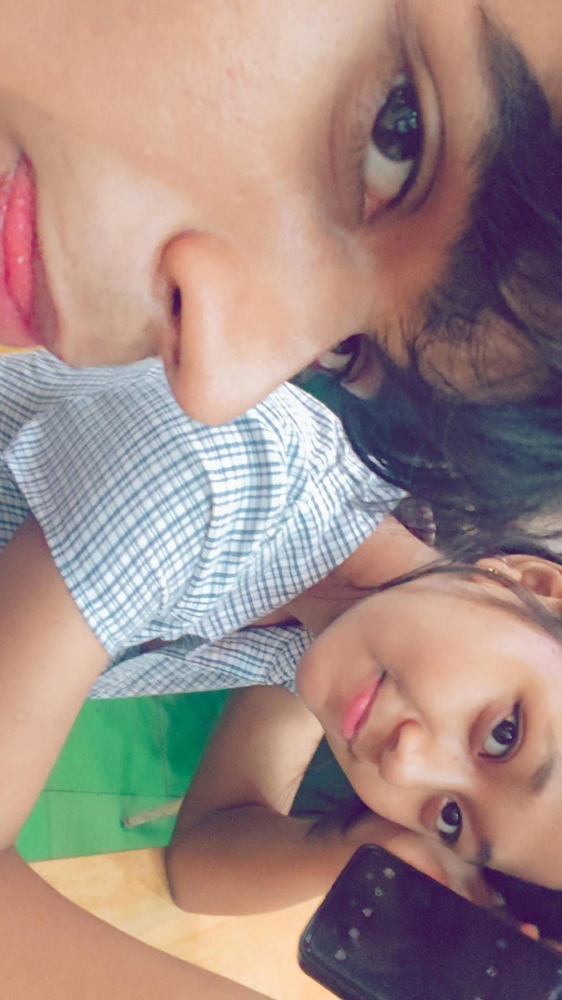
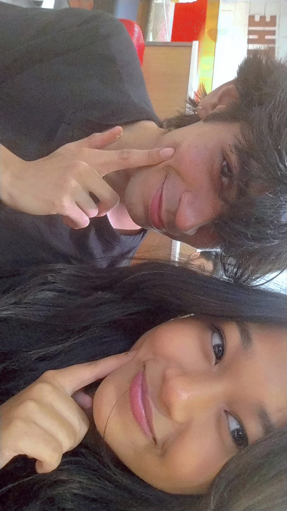
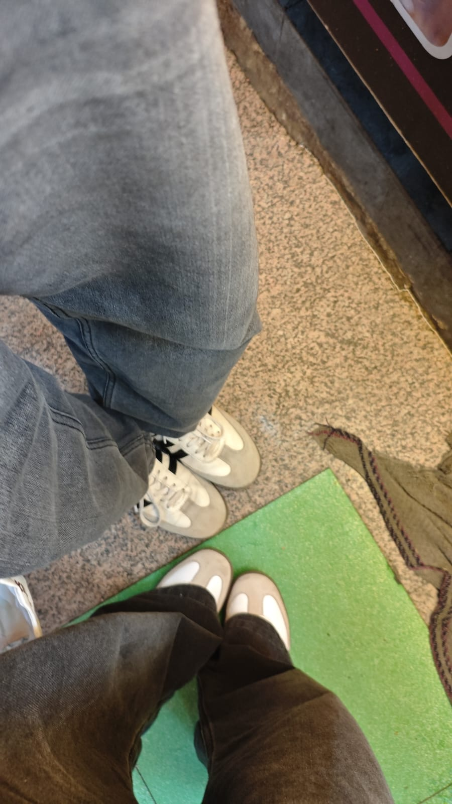
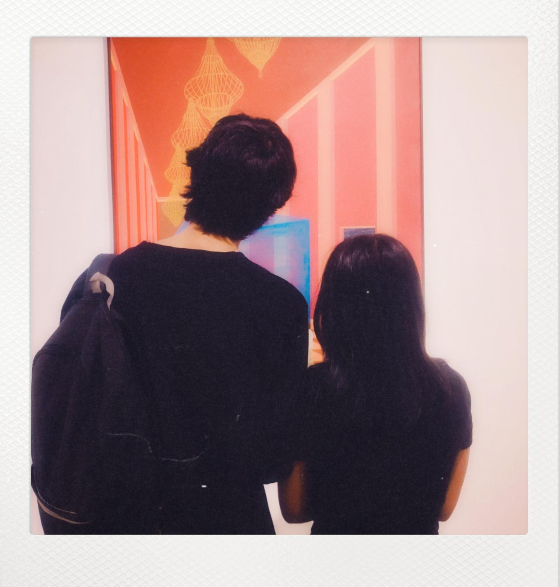

my cute lapaster(lobster) ❤️
KITTI CUTUUUUU PIC HA YEE TUMNE TO MERI LIFE MEI AAKE UTAL PUTAL MACHA DI You are my comfort, my safe place, my favorite person.


Every picture tells a story Every smile reminds me why I fell in love with this cute lapaster This little diary is filled with memories that I'll always cherish. No matter what happens, these moments will always remain special with my cute lapaster
Start Reading 💖
KITTI CUTUUUUU PIC HA YEE TUMNE TO MERI LIFE MEI AAKE UTAL PUTAL MACHA DI You are my comfort, my safe place, my favorite person.

KITTI PYARII SMILEE HAI YARR Your smile has the power to make my worst days disappear BABYYYYYYYYYYY Whenever I see you smiling, everything around me feels brighter. I hope I get to protect that smile forever.

SAME SAME FIT OHOOO CUTE CAMINI MERI BHOT PYARI HO TUM AAAAAAAAAAAAAAAAAAAAAAAAAAAAAAAAAAAA TWINSSSSSSSSSSS

AGAL KOI PUCEGA HAPINESS KY EY TO MEI YE PHOTO DIKAUNGAAA
Sorry for all my mistakes. I genuinely feel bad whenever I make you cry. I loved you. I love you. And I will love you with all my heart. I don't ever want to lose you. You're one of the most precious people in my life. I know this virtual diary won't fix everything but I wanted to tell you how genuinly i feel about you You're always my priority. Thank you for every smile, every memory, every laugh, every hug, and every little moment we've shared. I Love You Nihalika Sing ❤️ I Miss You Nihalika Sing ❤️ ❤️